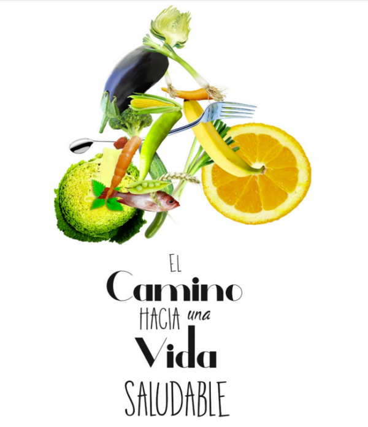
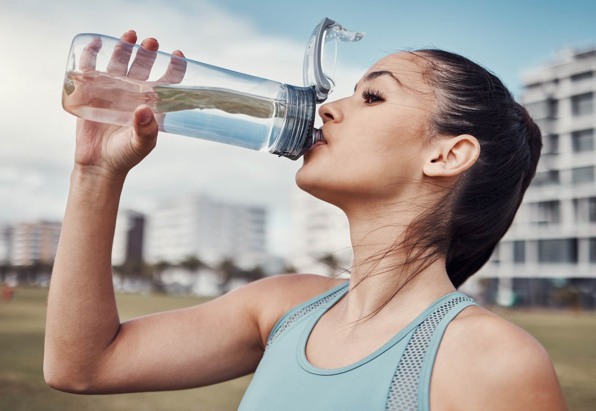
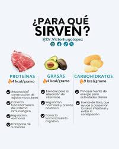

El Primer Paso: Cómo Iniciar Tu Camino en el Fitness y No Rendirte

Empezar un nuevo estilo de vida puede parecer una montaña imposible de escalar, pero la verdad es que cada gran viaje comienza con un solo paso. El fitness no se trata de entrenamientos extremos desde el primer día, sino de construir hábitos positivos y sostenibles que te llenen de energía y bienestar.
Las Claves para un Comienzo Exitoso:
- Metas Pequeñas y Realistas: Olvídate de correr un maratón la primera semana. Tu objetivo puede ser tan simple como caminar 20 minutos al día, tres veces por semana. Celebrar estos pequeños logros te mantendrá motivado.
- Encuentra una Actividad que Disfrutes: El mejor ejercicio es aquel que no se siente como una obligación. ¿Te gusta bailar? Prueba una clase de zumba. ¿Prefieres la tranquilidad? El yoga o el senderismo pueden ser para ti. Si te diviertes, la constancia vendrá sola.
- La Consistencia Supera a la Intensidad: Es mucho más efectivo ser constante con una rutina moderada que hacer un entrenamiento extremo una vez al mes. La clave del éxito a largo plazo es la disciplina de presentarte, incluso en los días en que no tienes ganas.
- Recuerda, este es tu viaje personal. No te compares con nadie más. Escucha a tu cuerpo, sé paciente y disfruta del increíble proceso de descubrir tu propia fuerza.
Más Allá del Gimnasio: Nutrición y Descanso como Pilares de Tu Éxito
El ejercicio es el motor que impulsa el cambio, pero la nutrición y el descanso son el combustible y el mantenimiento que hacen que todo funcione. Ignorar estos dos pilares es como construir una casa sin cimientos; tarde o temprano, la estructura se debilita.
Nutrición: El Combustible para Tu Cuerpo
No necesitas dietas complicadas ni restrictivas. Enfócate en principios básicos para nutrir tu cuerpo de manera inteligente:
- Hidrátate: El agua es esencial para el rendimiento muscular y la recuperación. ¡Ten siempre una botella a mano!

- Prioriza Alimentos Reales:
Llena tu plato con alimentos integrales como frutas, verduras, proteínas magras (pollo, pescado, legumbres) y carbohidratos complejos (avena, arroz integral). Estos te darán la energía sostenida que necesitas.

- Equilibrio es la Clave: Piensa en la comida como tu aliada. Las proteínas ayudan a reparar tus músculos, los carbohidratos te dan energía para moverte y las grasas saludables apoyan tus funciones hormonales.

-
Descanso:
El Secreto de la Recuperación.
El músculo no crece mientras entrenas, sino mientras descansas. El descanso adecuado es fundamental para evitar lesiones, mejorar el rendimiento y permitir que tu cuerpo se adapte y se fortalezca. Asegúrate de dormir entre 7 y 8 horas por noche y no tengas miedo de tomarte días de descanso activo (caminatas suaves) o total.
Integrando el movimiento, una nutrición consciente y un descanso reparador, no solo estarás trabajando en tu físico, sino construyendo una base sólida para una vida llena de vitalidad y salud.